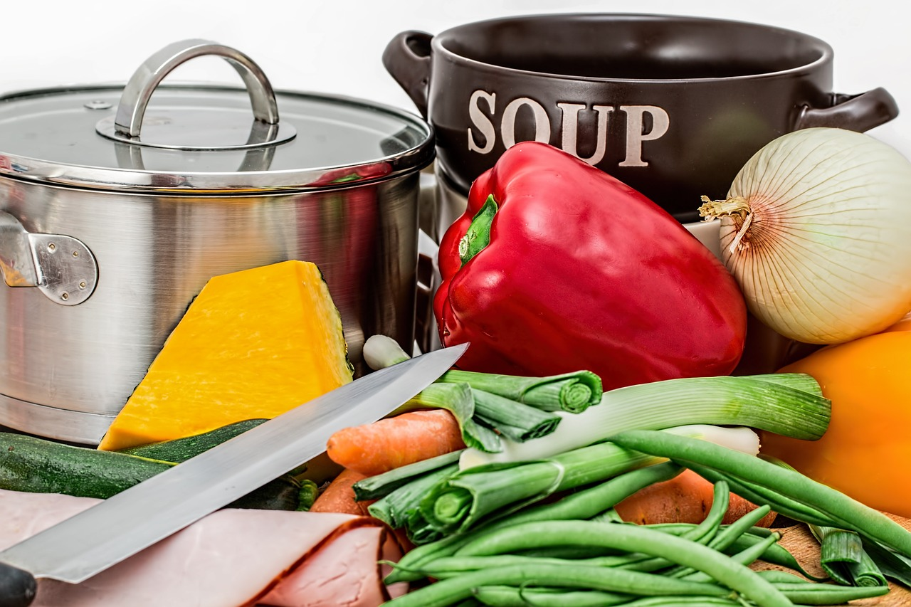

Pumpkin, carrots, spices.
Open Modal 1Pumpkin, carrots, spices.
Open Modal 1
This vibrant salad is a beautiful and delicious way to add some wholesome and colorful veggies to your meal. The crisp and refreshing lettuce provides the perfect base for the sweet, earthy flavor of the tender roasted beets. The juicy and tangy tomatoes bring a burst of freshness and acidity to the dish, while the combination of textures and flavors creates a satisfying and well-rounded salad. Tossed with your favorite vinaigrette or dressing, this salad can be served as a healthy and satisfying side dish, or topped with some grilled chicken or tofu, can make a wholesome and filling main course. With its bright and appetizing colors, this salad is sure to brighten up any table and tantalize your taste buds.
Close